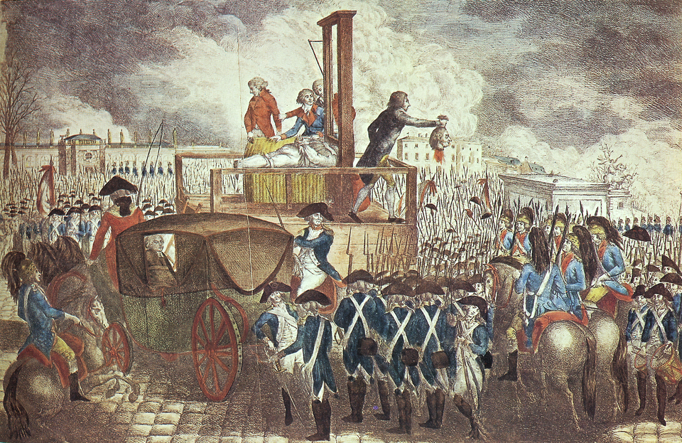

Cae la cabeza del ciudadano Luis Capeto en la plaza de la Revolución
Luis, decimosexto de ese nombre, convertido por la Revolución en el ciudadano Luis Capeto, ha sido guillotinado esta mañana ante una multitud inmensa en la plaza de la Revolución. Condenado por traición tras la fuga de Varennes y la caída de la monarquía, quiso hablar en el patíbulo, mas los tambores cubrieron su voz. Europa entera contiene el aliento.

A las diez y cuarto de esta mañana de enero, sobre un cadalso levantado en la plaza de la Revolución, la cuchilla cayó sobre el cuello de quien fue Luis, decimosexto de ese nombre, rey de Francia, y hoy no era ya sino el ciudadano Luis Capeto, condenado a muerte por la Convención Nacional. Decenas de miles de parisienses llenaban la plaza en un silencio que luego se rompió en gritos de «¡Viva la Nación!». Un verdugo mostró a la muchedumbre la cabeza segada. Así ha terminado, entre tambores y aceros, una monarquía que Francia veneró durante más de ochocientos años.
Lo trajeron en un carruaje cerrado, custodiado por la guardia, desde la prisión del Temple donde aguardaba con los suyos. Subió al patíbulo con paso firme, se dejó cortar los cabellos y desnudar el cuello, y quiso hablar al pueblo. Alcanzó a decir: «Muero inocente de todos los crímenes que se me imputan». Pero a una señal, los tambores de la guardia redoblaron con furia y cubrieron su voz, de modo que las últimas palabras del que fue rey se perdieron en el estruendo antes de llegar a los oídos de la plaza. Un instante después, la cuchilla resolvió lo demás.
Cuatro años han bastado para llevar al monarca del trono al cadalso. Todo comenzó con la toma de aquella fortaleza, la Bastilla, y la reunión de los estados en Asamblea; siguió la Constitución que hizo del rey un mero funcionario de la Nación. La ruptura llegó con la fuga: en el verano del noventa y uno, la familia real intentó huir del reino y fue reconocida y detenida en Varennes, y desde entonces el pueblo lo tuvo por traidor. El año pasado se abolió la monarquía y se proclamó la República; hallados en un cofre de hierro papeles que lo comprometían, la Convención lo juzgó y lo sentenció por escaso margen.
En las calles de París la jornada tuvo el aire sombrío de las cosas irreparables. Desde el amanecer, los tambores llamaban a las secciones y la tropa formaba en las esquinas por temor a un golpe de los realistas, que no vino. Cuentan que, caída la cabeza, algunos del gentío se abalanzaron a mojar pañuelos y picas en la sangre del cadalso, mientras otros se retiraban en silencio, pálidos, sin atreverse a mirar al vecino. En las cortes de Europa, dicen los correos, la nueva ha de caer como un rayo: reyes y emperadores verán en esta cuchilla una amenaza dirigida a todos ellos.
¿Qué queda dicho con esta muerte? La Convención ha querido cortar, junto con la cabeza del rey, todo camino de regreso: no hay ya trono al que volver, ni perdón que negociar. Francia ha arrojado un guante a la faz de los reyes, y no es difícil adivinar que lo recogerán con las armas. Ya Austria y Prusia guerrean en las fronteras; hoy Londres, Madrid y tantas otras cortes tendrán un motivo más, y de los que no se olvidan. El diario no sabe cuánta sangre correrá tras esta primera; mas teme que la de esta mañana sea apenas la que abre la cuenta.